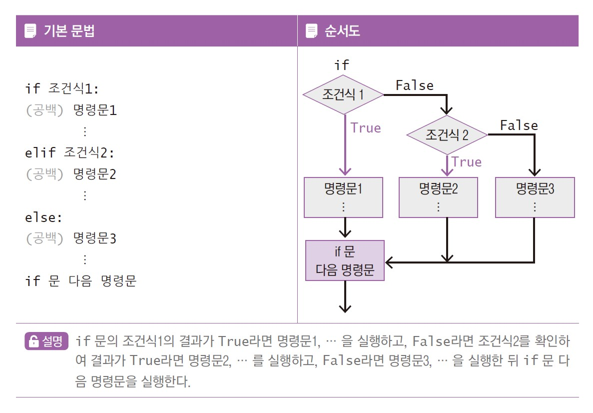
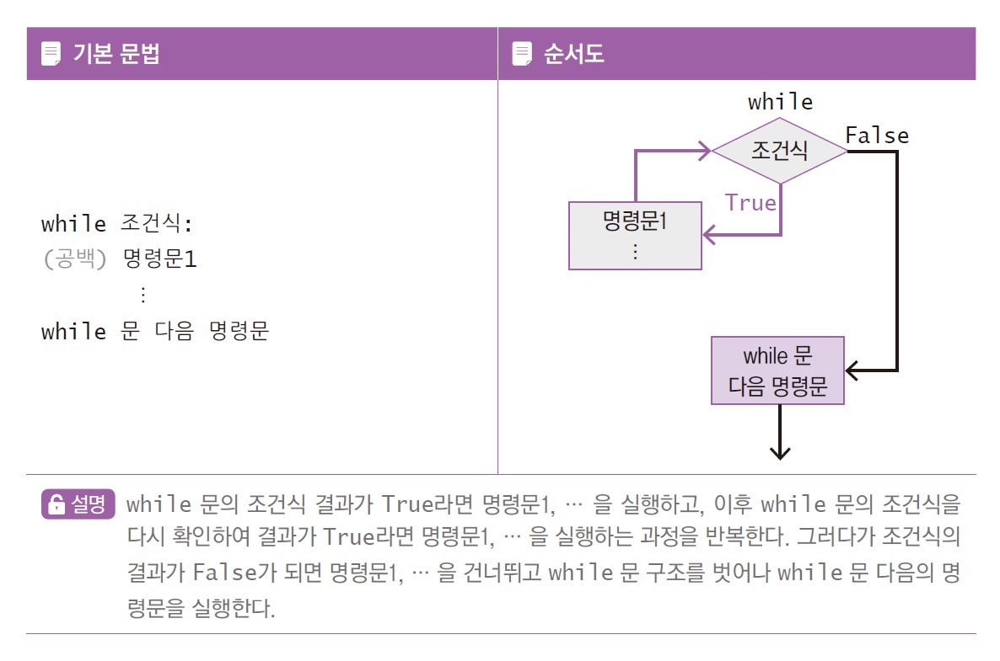

# 변수 생성1 : 숫자
a = 100
print(a)100변수명 = 값_로 구성될 수 있으며, 첫 글자는 반드시 영문자나 _로 시작함['False', 'None', 'True', 'and', 'as', 'assert', 'async', 'await', 'break', 'class', 'continue', 'def', 'del', 'elif', 'else', 'except', 'finally', 'for', 'from', 'global', 'if', 'import', 'in', 'is', 'lambda', 'nonlocal', 'not', 'or', 'pass', 'raise', 'return', 'try', 'while', 'with', 'yield']# comment''' comment ''', """ comment """| 자료형 | 의미 | 예시 |
|---|---|---|
| int | integer, 정수 | 100 |
| float | float, 부동 소수점 | 95.7 |
| str | string, 문자열 | ‘Lee’ |
| bool | boolean, 부울 | True False |
<class 'int'>
<class 'float'>
<class 'str'>
<class 'bool'>
<class 'bool'>| 연산자 | 의미 | 예시 | 결과 |
|---|---|---|---|
| + | 더하기 | 10+20 | 30 |
| - | 빼기 | 10-20 | -10 |
| * | 곱하기 | 10*20 | 200 |
| / | 나누기 | 10/20 | 0.5 |
| // | 나눈 정수 몫 | 10//20 | 0 |
| % | 나눈 나머지 | 10%20 | 10 |
| ** | 거듭제곱 | 10**2 | 100 |
=를 사용하며, 산술 연산자와 함께 사용하면 할당을 보다 간결하게 할 수 있음| 연산자 | 의미 | 예시 |
|---|---|---|
| = | 왼쪽 변수에 오른쪽 값을 할당 | x=10 |
| += | 왼쪽 변수에 오른쪽 값을 더하고 결과를 왼쪽 변수에 할당 | x+=10 |
| -= | 왼쪽 변수에 오른쪽 값을 빼고 결과를 왼쪽 변수에 할당 | x-=10 |
| *= | 왼쪽 변수에 오른쪽 값을 곱하고 결과를 왼쪽 변수에 할당 | x*=10 |
| /= | 왼쪽 변수에 오른쪽 값을 나눈 결과를 왼쪽 변수에 할당 | x/=10 |
| //= | 왼쪽 변수에 오른쪽 값을 나눈 몫의 결과를 왼쪽 변수에 할당 | x//=10 |
| %= | 왼쪽 변수에 오른쪽 값을 나눈 나머지의 결과를 왼쪽 변수에 할당 | x%=10 |
| **= | 왼쪽 변수에 오른쪽 값만큼 거듭제곱을 하고 결과를 왼쪽 변수에 할당 | x**=2 |
| 연산자 | 의미 | 예시 | 결과 |
|---|---|---|---|
| == | 값이 동일하다 | 10==20 | False |
| != | 값이 동일하지 않다 | 10!=20 | True |
| > | 왼쪽 값이 오른쪽 값보다 크다 | 10>20 | False |
| >= | 왼쪽 값이 오른쪽 값보다 크거나 동일하다 | 10>=20 | False |
| < | 왼쪽 값이 오른쪽 값보다 작다 | 10<20 | True |
| <= | 왼쪽 값이 오른쪽 값보다 작거나 동일하다 | 10<=20 | True |
| 연산자 | 의미 | 예시 | 결과 |
|---|---|---|---|
| and | 논리 AND 연산, 왼쪽 식과 오른쪽 식 모두 참인 경우에만 True | a=25 print(a>8 and a<60) |
True |
| or | 논리 OR 연산, 왼쪽 식과 오른쪽 식 중 하나라도 참인 경우에만 True | a=70 print(a<8 or a>=60) |
True |
| not | 논리 NOT 연산, 오른쪽 식이 참이면 False, 거짓이면 True | a=20 print(not a==20) |
False |
input() 함수를 사용함input() 함수는 안내문을 출력한 후 사용자의 입력을 기다리며, 입력한 값을 문자열로 저장함int(), float() 함수를 이용하여 형 변환해야 함변수 = input(안내문)print() 함수를 사용함,로 구분하여 출력할 수 있음{} 안에 변수명을 직접 작성하여 출력하는 방식[] 안에 값을 ,로 구분하여 나열함[index]를 사용하여 리스트의 특정 위치에 있는 요소에 접근함[start:stop]를 사용하여 리스트의 일부 요소에 접근함[10, 20, 30]
[50, 20, 30]
[50, 90, 100]() 안에 값을 ,로 구분하여 나열함('월', '화', '수', '목', '금', '토', '일'){} 안에 key: value 값을 ,로 구분하여 나열함{} 안에 값을 ,로 구분하여 나열함[표현식 for 변수 in 항목들 if 조건]

# 무작위로 1~100 사이의 두 정수를 생성한 후, 큰 수부터 작은 수 순으로 출력
import random
a = random.randint(1, 100)
b = random.randint(1, 100)
if a<b:
a, b = b, a
print(a, b)70 45
# enumerate() 함수 : for 문과 함께 사용하여 인덱스와 해당 값을 출력
for x, name in enumerate(['수박', '참외', '자두']):
print(x, name)0 수박
1 참외
2 자두# zip() 함수 : 두 리스트의 원소에 차례로 접근하여 짝을 지어 딕셔너리로 반환
num = [1, 2, 3]
char = ['A', 'B', 'C']
dict(zip(num, char)){1: 'A', 2: 'B', 3: 'C'}# random() 함수 : 0.0과 1.0 사이의 임의의 실수 반환(0.0은 포함하나, 1.0은 포함하지 않음)
import random
for i in range(10):
x = random.random()
print(x)0.06366914358862641
0.25565618181758776
0.7375303271191379
0.8102984267956264
0.9437102712345108
0.88834090510816
0.8402052219524005
0.7852152214773251
0.06887110702123633
0.3398919344357447def 함수명(매개변수1, 매개변수2, …):
문장
return 반환값
lambda 매개변수들: 식